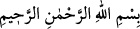
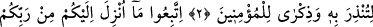
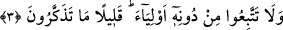

KUR’AN’A UYUN
Rahmân ve Rahîm olan Allah’ın adıyla.
1. Elif. Lâm. Mîm. Sâd.
2. (Bu), kendisiyle insanları uyarman, inananlara öğüt vermen için sana indirilen
bir kitaptır. Artık bu hususta kalbinde bir şüphe olmasın.
3. Rabbinizden size indirilene (Kur’an’a) uyun. O’nu bırakıp da başka dostların
peşlerinden gitmeyin. Ne kadar da az öğüt alıyorsunuz!
“Elif” Allah’ın birliğine, “lâm” ilim sıfatıyle birlikte zâtına, “mim” Muhammed
(a.s.)’ın nefsine ve hakikatına, “sâd” Muhammed (a.s.)’ın sûretine yani cesedine ve
zahirine işarettir.
İbn Abbas (r. anhüma)’dan şöyle rivayet edilmiştir: “Sâd”, Mekke’de bir dağdır.
Henüz gece ve gündüzün olmadığı bir vakitte üzerinde Rahman’ın arşı vardı.”
“Dağ” ile Hz. Peygamber (a.s.)’ın bedenine, Rahman’ın arşı ile de onun kalbine
işaret etmiştir. Nitekim bir hadiste: “Mü’minin kalbi, Allah’ın arşıdır.”[1]
buyurulmuştur. “Gecenin ve gündüzün olmadığı vakit” sözü ile de vahdete işaret
etmiştir. Çünkü kalb, nefsânî arzuların gölgesinde kalır ve onun sıfatlarının karanlığıyla
perdelenirse, işte o zaman “gece vakti” olur. Kalbe ruh güneşinin ışığı doğar da onun
parlayan nuru ile aydınlanır ve gönül âleminin perdeleri aralanırsa işte o zaman da,
“gündüz vakti” olur. Eğer kalb, ma‘rifet ve şühûd-i zâtî ile hakiki vahdete erer ve orada
her şey fânî olduğu için ona göre aydınlık ve karanlık eşit olursa artık onun vakti ne
gecedir, ne de gündüz. İşte “Rahman’ın arşı” olma husûsiyeti ancak bu vakitte kazanılır.
Bu ayetin mânâsı şöyledir: Her şeyin varlığı, başından sonuna kadar bir kitaptır ki
onun ilmi sana indirilmiştir. (et-Te’vîlâtü’l-Kâşâniyye’de böyle geçmektedir.)
Şeyh Necmeddin der ki: Allah Teâlâ “Rahmân ve Rahîm olan Allah’ın adıyle”
kelâmı ile zatını ve sıfatlarını zikrettikten sonra kendisini “Elif lam mim sad”
buyurarak tanıtıyor. Yani, Allah öyle bir ilâhtır ki sana indirilen Kitab vasıtasıyla
ma‘rifet ve muhabbetin kemâlini kabul etmeleri için lütfundan ötürü kullarına muhabbet
ve mârifetini tahsis etmiş, sabır ve sıdk (doğruluk) ihsan etmiştir.
Farça tefsirde şöyle denilmiştir: “Elif lâm mîm sâd” Kur’an’ın adıdır veya bu